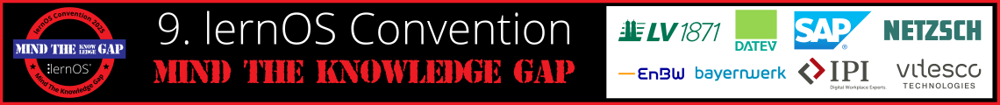
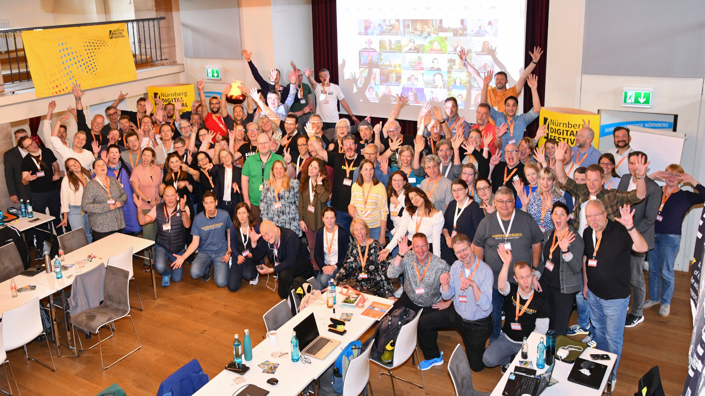

Willkommen zur lernOS Convention 2025 💛

Die 9. lernOS Convention (#loscon25) findet vom 1.-2. Juli 2025 auf der Kaiserburg Nürnberg & Online statt (hybride Veranstaltung). Das Motto ist “Mind the Knowledge Gap”. Ausführliche Informationen zur Themenstellung findest du in diesem Blog-Beitrag.
Die lernOS Convention ist das Top-Event zu Wissensmanagement und Lernenden Organisationen im deutschsprachigen Raum. Der digitale Arbeitsplatz, moderne Intranets, New Ways of Working und persönliches Wissensmanagement für Wissensarbeiter:innen und Lernende Teams sind die zentralen Themen.

Auf diesen Infoseiten findet ihr alle Informationen zur Veranstaltung. Die Tickets für Vor-Ort- und Online-Teilnahme sind über den Ticketshop verfügbar.

Wichtige Termine
- 21.02.: Start der Orga-Calls des Orga-Teams (jeweils Freitags, 09:00 - 10:00 Uhr)
- 10.03.: Golive Landing Page cogneon.de/loscon25 und Ticketshop und Versand Einladung an loscon-Alumni
- 24.03.: Golive Call for Participation (CfP, Einreichung von Programmvorschlägen bis 23.05. um 23:59 Uhr)
- 02.06.: Programm Version 1.0 ist fertig 🎉
- 16.06.: Versand der Future-Backwards-Anleitung und Einladung aller Teilnehmer:innen in den Discord-Server der loscon
- 26.06.: Vorab-Webkonferenz (13:00 - 14:00 Uhr), im Anschluss ist von 14:00-15:00 Uhr Zeit zum betreuten Testen von Discord
- 30.06.: Aufbau in der Burg (voraussichtlich ab Mittag)
- 30.06.: Vorabend-Treffen bei der Eröffnungsveranstaltung des Nürnberg Digital Festivals im Künstlerhaus am Hauptbahnhof (kostenlose Anmeldung notwendig)
- 01.-02.07.: lernOS Convention 2025
- 11.07.: loscon-Retro des Orga-Teams (09:00 - 10:00 Uhr)